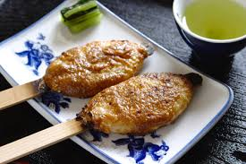

Tohoku!
Made from mashed Uruchi rice, the goheimochi is a local specialty of Mikawa district. The delicacy comes in a variety of shapes and flavours, but the most popular one is a large oval-shaped piece which is skewered and grilled with sweet and thick miso paste, the favourite local sauce. Head to the oku-Mikawa area where you can have your fill from the 25 shops selling different varieties of the fluffy and yummy rice cake!